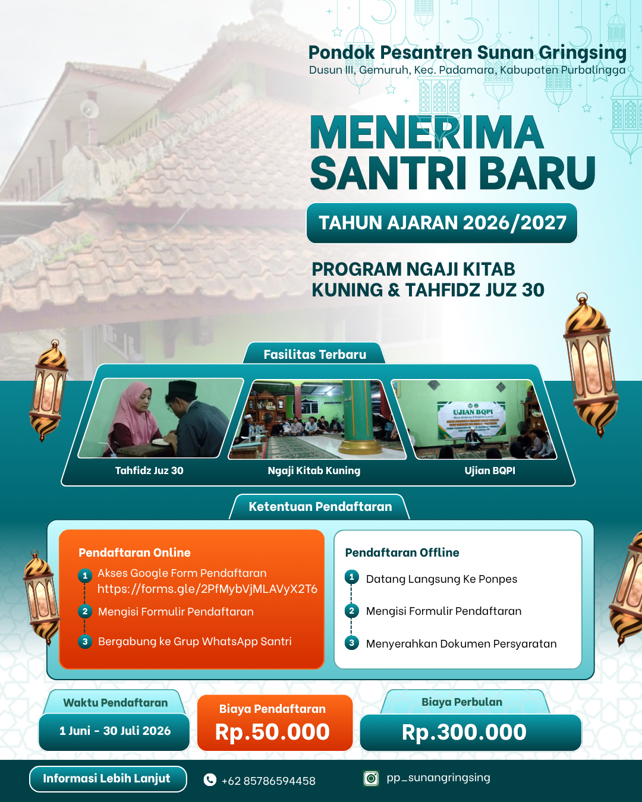

Penerimaan santri baru Tahun Ajaran 2026/2027 sudah dibuka. Jadilah bagian dari keluarga besar Pondok Pesantren Sunan Gringsing.

Brosur Pendaftaran Santri Baru
📅 Waktu Pendaftaran: 1 Juni - 30 Juli 2026
🎓 Program: Ngaji Kitab Kuning & Tahfidz Juz 30
💰 Biaya Pendaftaran: Rp 50.000
💸 Biaya Perbulan: Rp 300.000
📍 Alamat: Dusun III, Gemuruh, Kec. Padamara, Kab. Purbalingga, Jawa Tengah
📞 Kontak: +62 857-8659-4458 | Instagram: pp_sunangringsing
Berisi panduan, formulir, dan persyaratan pendaftaran lengkap
Buka & Unduh Dokumen*Tautan akan terbuka di tab baru